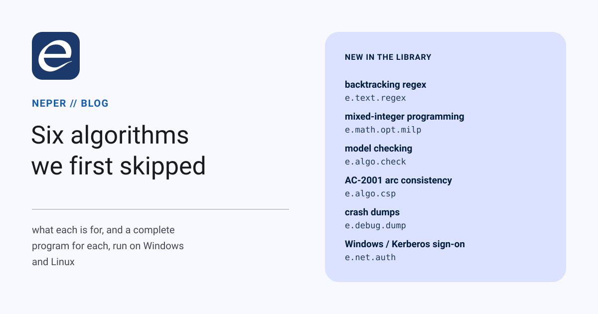

Six algorithms we first skipped

Neper's standard library was planned from a list of 2,250 algorithms. Each got a verdict: implement it, point it at a duplicate, or skip it. By the time the list was done, every entry marked "implement" existed. So we went back through the skips and asked which ones people actually reach for. Six came back. This post says what each one is for, and shows a complete program for each.
Every sample below is a whole program. We compiled and ran each one on Windows and on Linux, and the output shown is what it printed. The sources are in docs/blog/code/six-algorithms/.
1. A regex engine that backtracks, when you ask it to
What it is for. Real patterns lean on features that are not strictly "regular":
- a backreference that finds a doubled word;
- a lookbehind that matches a price only when no minus sign comes before it;
- an atomic group that stops a parser from retrying.
These are the patterns people paste in from PCRE, Python or JavaScript. Neper's regex was a Pike VM. That design is linear in the length of the text and can never blow up, and it refused all of these.
What changed. compile is still the Pike VM. For a construct only a backtracker can run, it now answers NeedsBacktracking instead of a bare "invalid pattern". compile_backtracking accepts the following:
- backreferences,
\1and\k<name>; - named groups;
- lookahead and lookbehind;
- atomic groups;
- possessive repeats.
It returns the same Regex type, so find, captures and replace_all work unchanged.
use e.io
use e.mem
use e.text.regex
fn main(a: *mem.Arena, args: []str) -> err {
let plain = regex.Options { case_insensitive: false, multiline: false, dot_matches_newline: false }
// A doubled word, "the the": a backreference, so only the backtracker takes it.
let pattern = "\\b(\\w+) \\1\\b"
let (_, refused) = regex.compile(a, pattern, plain)
if refused == regex.NeedsBacktracking {
try io.printf["compile: {}\n"]("needs the backtracker")
}
let doubled = try regex.compile_backtracking(a, pattern, plain)
let text = "it was the the best of times"
let (hit, found) = regex.find(&doubled, text, 0usize)
if found {
let word: str = text[hit.start..hit.end]
try io.printf["doubled word at {}..{}: {}\n"](hit.start, hit.end, word)
}
// A price not preceded by "-": lookbehind, lookahead and a named group.
let price = try regex.compile_backtracking(a, "(?<!-)\\$(?<amount>\\d+)(?=\\.\\d\\d)", plain)
let line = "refund -$15.00, charge $42.50"
let (c, matched, capture_error) = regex.captures(a, &price, line, 0usize)
if capture_error != ok { ret capture_error }
let (amount, named) = regex.group_index(&price, "amount")
if matched && named {
let g = c.groups[amount - 1usize]
let digits: str = line[g.start..g.end]
try io.printf["charged amount: {}\n"](digits)
}
// Swap "last, first" with the ordinary replace_all; it works on either engine.
let swap = try regex.compile_backtracking(a, "(\\w+), (\\w+)", plain)
let swapped = try regex.replace_all(a, &swap, "Lovelace, Ada; Hopper, Grace", "$2 $1")
try io.printf["{}\n"](swapped)
// A pattern that backtracks exponentially stops on its step budget instead of hanging.
let evil = try regex.compile_backtracking(a, "(a+)+$", plain)
let subject = "aaaaaaaaaaaaaaaaaaaaaaaaaaaaaaaaaaaaaaaab"
if !regex.is_match(&evil, subject) && regex.last_error(&evil) == regex.TooManySteps {
try io.printf["(a+)+$: gave up after its step budget\n"]()
}
ret ok
}compile: needs the backtracker
doubled word at 7..14: the the
charged amount: 42
Ada Lovelace; Grace Hopper
(a+)+$: gave up after its step budgetThe catch, handled. A backtracker can take exponential time: (a+)+$ against forty as and a b tries about a trillion paths. So every search has a step budget of a million steps plus a thousand per byte searched, and a backtrack stack whose size is fixed when the pattern compiles. Running out of either is an answer, TooManySteps or TooDeep, not a hang. is_match and find return no error, so after a "no match" last_error says whether the budget was the reason.
Checked against: Python 3.12's re. The fixture compares every construct plus 40 random patterns, and a further 3,300 random patterns were compared outside it. The only disagreement was patterns like (.?b){2}+. There CPython does not do what its own documentation says: it defines x{m,n}+ as (?>x{m,n}). Written in that atomic form, Python gives our answer.
2. Mixed-integer programming
What it is for. Linear programming finds the cheapest plan when every quantity can be a fraction. Real plans also contain counts and yes-or-no choices:
- three trucks, not 2.8;
- open this warehouse or don't;
- assign each nurse to exactly one shift.
Scheduling, rostering, cutting stock, packing and routing all become a mixed-integer program (MILP): a linear program in which some variables must be whole numbers.
How it works. e.math.opt.milp solves the linear relaxation with its own bounded-variable simplex. At the root it adds Gomory mixed-integer cuts, rows read off the optimal tableau that cut away the fractional corner without losing any integer point. Then it branches on the most fractional variable and searches the open node with the best bound first. That combination is called branch and cut.
use e.io
use e.mem
use e.math.opt.milp
// Move 43 pallets today at the least cost. A truck (70) takes 12 pallets and there
// are 3; a van (35) takes 5; overtime (9 an hour, at most 6) moves 1 pallet an hour.
// Trucks and vans come in whole numbers; overtime hours do not.
fn main(a: *mem.Arena, args: []str) -> err {
let inf = milp.infinity()
// trucks vans overtime
var c = [3]f64{ 70.0f64, 35.0f64, 9.0f64 }
var row = [3]f64{ 12.0f64, 5.0f64, 1.0f64 }
var need_lo = [1]f64{ 43.0f64 }
var need_hi = [1]f64{ inf }
var lo = [3]f64{ 0.0f64, 0.0f64, 0.0f64 }
var hi = [3]f64{ 3.0f64, inf, 6.0f64 }
var whole = [3]bool{ true, true, false }
let p = milp.Problem { n: 3usize, m: 1usize, c: c[..], a: row[..], row_lower: need_lo[..], row_upper: need_hi[..], lower: lo[..], upper: hi[..], integer: whole[..] }
// All storage is the caller's: size it for the problem, the cuts and the open nodes.
let o = milp.defaults()
let scratch = try mem.alloc[f64](a, milp.scratch_len(3usize, 1usize, o.max_cuts, 256usize))
let slots = try mem.alloc[usize](a, milp.slot_len(3usize, 1usize, o.max_cuts))
var x: [3]f64 = zero
let (r, failure) = milp.solve(&p, o, x[..], scratch, slots)
if failure != ok { ret failure }
if r.status == .Optimal {
try io.printf["cost {.2} with {.0} trucks, {.0} vans, {.1} overtime hours\n"](r.objective, x[0], x[1], x[2])
try io.printf["{} nodes, {} Gomory cuts\n"](r.nodes, r.cuts)
}
ret ok
}cost 263.00 with 3 trucks, 1 vans, 2.0 overtime hours
1 nodes, 1 Gomory cutsThe linear relaxation's answer is 1.4 vans for 259, which you cannot hire. The single cut moves the relaxation straight to an integer point, so no branching was needed. solve answers Optimal, Infeasible, Unbounded or NodeLimit, together with the best bound, so a caller that stops early knows how far it can be from optimal. Setting cut_rounds to 0 turns the cuts off.
Checked against: HiGHS through scipy.optimize.milp. The fixture covers knapsack, assignment, set cover, general and mixed integers, equality rows, infeasible and unbounded problems, and twenty random instances, all within 1e-6. On 2,000 further random instances the cuts took the total node count from 38,208 down to 29,585.
Its limits. The matrix is dense, and there is no presolve and no heuristics. It is meant for problems with up to a few hundred rows, not for replacing a commercial solver.
3. Model checking
What it is for. Tests show that a concurrent protocol worked in the interleavings you happened to run. A model checker tries every interleaving: it explores every state the protocol can reach and reports the first one that breaks your rule. That is how lock implementations, cache-coherence protocols, consensus algorithms and state machines are verified before they ship.
Explicit state. You write the successor function, which says what each thread can do next, and the invariant. check.explore does a breadth-first search, so when the invariant fails, check.trace returns the shortest sequence of steps that gets there. Here it is on a lock that tests and then sets in two steps, the classic race:
use e.io
use e.mem
use e.algo.check as check
type Model = struct { unused: u8 }
// Two threads share a lock taken by "test, then set" -- two steps, not one atomic swap.
// State: pc of thread 0, pc of thread 1, the lock. pc 0 waits until the lock looks free,
// pc 1 sets it, pc 2 is the critical section and frees the lock on the way out.
fn step(m: *Model, s: []const u64, out: []u64) -> usize {
var count = 0usize
var t = 0usize
while t < 2usize {
if s[t] != 0u64 || s[2usize] == 0u64 {
let n = out[count * 3usize..count * 3usize + 3usize]
n[0usize] = s[0usize]
n[1usize] = s[1usize]
n[2usize] = s[2usize]
if s[t] == 0u64 {
n[t] = 1u64
} else if s[t] == 1u64 {
n[2usize] = 1u64
n[t] = 2u64
} else {
n[2usize] = 0u64
n[t] = 0u64
}
count += 1usize
}
t += 1usize
}
ret count
}
// Mutual exclusion: never both threads in the critical section.
fn exclusive(m: *Model, s: []const u64) -> bool { ret !(s[0usize] == 2u64 && s[1usize] == 2u64) }
fn main(a: *mem.Arena, args: []str) -> err {
var model = Model { unused: 0u8 }
var start: [3]u64 = zero
var store: [300]u64 = zero
var parent: [100]u32 = zero
var table: [256]u32 = zero
var scratch: [6]u64 = zero
let (r, e) = check.explore[Model](&model, 3usize, start[..], step, exclusive, true, 0usize, store[..], parent[..], table[..], scratch[..])
if e != ok { ret e }
try io.printf["{} states, {} transitions\n"](r.states, r.transitions)
if r.verdict == .Violated {
var path: [16]u32 = zero
let (n, trace_error) = check.trace(parent[..], r.last, path[..])
if trace_error != ok { ret trace_error }
var i = 0usize
while i < n {
let s = usize(path[i]) * 3usize
try io.printf[" step {}: t0 pc={} t1 pc={} lock={}\n"](i, store[s], store[s + 1usize], store[s + 2usize])
i += 1usize
}
}
ret ok
}9 states, 12 transitions
step 0: t0 pc=0 t1 pc=0 lock=0
step 1: t0 pc=1 t1 pc=0 lock=0
step 2: t0 pc=1 t1 pc=1 lock=0
step 3: t0 pc=2 t1 pc=1 lock=1
step 4: t0 pc=2 t1 pc=2 lock=1Both threads see the lock free (steps 1–2) before either sets it, and both end up in the critical section. With the deadlock flag on, a state with no successors is reported too. The fixture finds three dining philosophers each holding one fork.
Bounded model checking. The same question can be asked symbolically for systems given as boolean circuits. check.bmc unrolls the transition relation into CNF for e.algo.sat, one frame per step, and asks whether a bad state is reachable at step 0, 1, 2 and so on. check.prove adds k-induction, so a property can be proven safe rather than only checked to a depth. The fixture builds a 4-bit counter out of half-adders, finds it reaches 11 at exactly step 11, and proves it never reaches 13.
Its limits. Only safety properties ("this never happens") are supported. There is no liveness ("this eventually happens"), and no symmetry or partial-order reduction, so the state count grows with every interleaving.
4. AC-2001: arc consistency without repeated work
What it is for. Constraint solvers for timetabling, configuration and puzzles spend most of their time pruning. If talk 1 must come two slots after talk 0, then slot 7 is impossible for talk 0, and it can be crossed out before any search starts. Repeating that over every pair of variables until nothing changes is called arc consistency. e.algo.csp has done it with AC-3, the textbook algorithm.
What AC-2001 changes. When AC-3 revisits a constraint, it looks for each value's support from the start of the domain again. AC-2001 (Bessière and Régin, 2001) remembers the last support it found for each value and resumes from there. That gives it the optimal worst case, O(e·d²) where AC-3 has O(e·d³), and it reaches exactly the same result. It takes the same arguments as ac3, plus the table of remembered supports.
use e.io
use e.mem
use e.algo.csp
// Four talks in hour slots 0..7; each pair listed below must be two slots apart.
type Talks = struct { checks: usize }
fn gap(t: *Talks, x: usize, y: usize, a: usize, b: usize) -> bool {
t.checks += 1usize
if x < y { ret a + 2usize <= b }
ret b + 2usize <= a
}
fn show(domains: []const u8, n: usize, k: usize) -> err {
var x = 0usize
while x < n {
try io.printf[" talk {}:"](x)
var v = 0usize
while v < k {
if domains[x * k + v] == 1u8 { try io.printf[" {}"](v) }
v += 1usize
}
try io.printf["\n"]()
x += 1usize
}
ret ok
}
fn main(a: *mem.Arena, args: []str) -> err {
let n = 4usize
let k = 8usize
// Talk 0 before 1 before 2 before 3, and talk 0 at least two slots before 3.
var pairs = [8]usize{ 0usize, 1usize, 1usize, 2usize, 2usize, 3usize, 0usize, 3usize }
var queue: [8]usize = zero
var queued: [8]u8 = zero
var last: [64]usize = zero
var d3: [32]u8 = zero
var d2: [32]u8 = zero
var i = 0usize
while i < n * k {
d3[i] = 1u8
d2[i] = 1u8
i += 1usize
}
var by3 = Talks { checks: 0usize }
try csp.ac3[Talks](d3[..], n, k, pairs[..], &by3, gap, queue[..], queued[..])
var by2001 = Talks { checks: 0usize }
try csp.ac2001[Talks](d2[..], n, k, pairs[..], &by2001, gap, queue[..], queued[..], last[..])
try io.printf["slots left after arc consistency:\n"]()
try show(d2[..], n, k)
try io.printf["constraint checks: AC-3 {}, AC-2001 {}\n"](by3.checks, by2001.checks)
ret ok
}slots left after arc consistency:
talk 0: 0 1
talk 1: 2 3
talk 2: 4 5
talk 3: 6 7
constraint checks: AC-3 219, AC-2001 183Checked against: a Python reference that runs both algorithms in the module's queue order. It matches the domains and the exact number of checks on 23 instances. AC-2001 is never worse, and 8% better overall there.
Writing this sample found a bug. It gives the solver a queue exactly as long as the number of arcs, which ac3 accepts. ac3, in the library since D856, then wrote one slot past the end the first time it put an arc back on the queue, and ac2001 had copied the line. The fixture had always passed a larger queue. Both are fixed, and the fixture now uses an exact-size queue too.
5. Reading crash dumps
What it is for. When a program crashes in the field, what you get back is a dump: a Linux ELF core file or a Windows minidump. A crash reporter, a support tool or a test harness needs to open that dump and answer a few questions:
- which thread died, and at what address;
- what the registers held;
- which modules were loaded where;
- what a given address in memory contained.
How it works. e.debug.dump.parse reads either format into one view: threads with their registers, modules (or the files a core mapped), the crash, and read_memory, which refuses any read that leaves the captured regions. It can also write a dump of a running process: a minidump through Windows' MiniDumpWriteDump, or a core through gdb's gcore on Linux. This program dumps itself and summarizes the dump:
use e.io
use e.mem
use e.os
use e.fs.mmap as mmap
use e.debug.dump
// Print what a crash dump says: the process, the crash if there was one, each
// thread's instruction pointer and the first few modules.
fn summarize(a: *mem.Arena, path: str) -> err {
let (info, stat_error) = os.stat(a, path)
if stat_error != ok { ret stat_error }
// Map it rather than read it: a Linux core holds every mapping, reservations included.
let mapping = try mmap.open(a, path, false, 0u64, usize(info.size))
let (d, parse_error) = dump.parse(a, mmap.bytes(mapping))
if parse_error != ok { ret parse_error }
if d.kind == .Minidump {
try io.printf["minidump of pid {}\n"](d.pid)
} else {
try io.printf["core of pid {} ({})\n"](d.pid, d.process_name)
}
if d.has_crash {
try io.printf["crashed in thread {} at {x}, code {x}\n"](d.crash_thread, d.crash_registers.rip, d.code)
}
var t = 0usize
while t < d.threads.len {
try io.printf["thread {}: rip {x} rsp {x}\n"](d.threads[t].id, d.threads[t].registers.rip, d.threads[t].registers.rsp)
t += 1usize
}
var m = 0usize
while m < d.modules.len && m < 3usize {
try io.printf["module {x} {}\n"](d.modules[m].base, d.modules[m].name)
m += 1usize
}
try mmap.close(mapping)
ret ok
}
fn main(a: *mem.Arena, args: []str) -> err {
if args.len > 1usize { ret summarize(a, args[1usize]) }
// No argument: dump this very process -- a minidump on Windows, a core on Linux.
let path = "self.dmp"
var written = dump.write_minidump(a, 0u32, path, dump.DATA_SEGMENTS)
if written == dump.Unsupported { written = dump.write_core(a, 0u32, path) }
if written != ok { ret written }
ret summarize(a, path)
}On Windows:
minidump of pid 27144
thread 64588: rip 7ff95a082d14 rsp 13fdf98
thread 69248: rip 7ff95a084a74 rsp 264fbf8
thread 11864: rip 7ff95a084a74 rsp 364fbf8
thread 54192: rip 7ff95a084a74 rsp 464fbf8
module 140000000 D:\repos\neper-algos5\build\blog_dump.exe
module 7ff959f20000 C:\Windows\System32\ntdll.dll
module 7ff958970000 C:\Windows\System32\kernel32.dllOn Linux:
core of pid 611 (blog-dump)
thread 611: rip 4188f7 rsp 7ffdf1834050
module 400000 /tmp/blog-dump
module 41b000 /tmp/blog-dumpThe Windows process has four threads, because the loader starts worker threads of its own. The Linux one is a single static binary with no loader at all. A core of a Neper process is about a gigabyte, because it includes the arena's reserved (never touched) address space. That is why the sample maps the file with e.fs.mmap instead of reading it into memory.
Its limits. Only x86-64 is supported, and there is no stack unwinding: you get each thread's registers, not a symbolized backtrace yet.
6. Signing in as the user who is already signed in
What it is for. In an office network, nobody types a password to reach the intranet or the company's SQL Server. Windows and Kerberos have already established who they are, and the program proves it with a token from the operating system. This is what "Windows authentication", "integrated security", SPNEGO and HTTP Negotiate all mean. Without it, a program must store a password somewhere.
How it works. Kerberos itself is a protocol of tickets, KDCs and key schedules that every host already implements. So e.net.auth does not reimplement it; it drives the host's own provider:
- On Windows, SSPI in
secur32.dll. - On Linux, MIT Kerberos's GSSAPI, looked up at run time with
os.dlopen. A machine without it getsNotFound, not a program that fails to start.
The API is the same token exchange on both hosts: client or server opens a context, and step takes the peer's token and produces the next one, until the context is complete.
use e.io
use e.mem
use e.net.auth
// The first leg of HTTP Negotiate: the header an intranet request carries so the
// server knows who is asking, with no password in the program.
fn main(a: *mem.Arena, args: []str) -> err {
let (ctx, open_error) = auth.client(a, .Negotiate, "HTTP/intranet.example.com")
if open_error == auth.NotFound {
try io.printf["no security provider on this host\n"]()
ret ok
}
if open_error != ok { ret open_error }
let token = try mem.alloc[u8](a, auth.MAX_TOKEN)
let (n, complete, step_error) = auth.step(ctx, "", token)
if step_error == auth.Failed {
// Linux: no Kerberos ticket for this user yet (kinit gets one).
try io.printf["no credentials to offer\n"]()
ret ok
}
if step_error != ok { ret step_error }
let header = try mem.alloc[u8](a, 16usize + n * 2usize)
let value = try auth.negotiate_header(header, token[..n])
let start: str = value[..32usize]
try io.printf["Authorization: {}...\n"](start)
try io.printf["{} token bytes, complete after one leg: {}\n"](n, complete)
// Each "WWW-Authenticate: Negotiate <token>" the server answers goes back through
// auth.parse_negotiate and auth.step until step reports the context complete.
try auth.close(ctx)
ret ok
}On Windows:
Authorization: Negotiate TlRMTVNTUAABAAAAl4II4g...
40 token bytes, complete after one leg: falseOn Linux, before kinit:
no credentials to offerThe Windows token begins TlRMTVNT, base64 for NTLMSSP. This laptop is not in a domain, so Negotiate fell back to NTLM. On a domain-joined machine the same call produces a Kerberos ticket, with no change to the program.
SQL Server uses it. x.microsoft.tds now logs in this way whenever it is given no user name. The login packet carries the first token, and the driver answers each token the server sends back until the login completes:
use e.io
use e.mem
use e.fs
use e.db
use x.microsoft.tds
// Windows authentication to SQL Server: no user name and no password in the program.
// The driver logs in as whoever runs it. Arguments: the server's certificate (DER).
fn main(a: *mem.Arena, args: []str) -> err {
let roots = try fs.read_file(a, args[1], 65536usize)
let options = tds.Options { host: "localhost", port: 14330u16, user: "", password: "", database: "", trust_roots: roots }
var c = try tds.open(a, options)
var rows = try db.query(&c, "SELECT SUSER_SNAME()", zero)
var row: [1]db.Value = zero
let more = try db.reader_next_err(&rows, row[..])
if more {
switch row[0] {
case .Text as name:
try io.printf["logged in as {}\n"](name)
default:
try io.printf["unexpected column type\n"]()
}
}
try db.close_rows(&rows)
try db.close(&c)
ret ok
}logged in as ROG\gaddlChecked on:
- Windows: an in-process client and server that complete Negotiate and NTLM handshakes as the current user, with garbled and out-of-order tokens refused.
- Linux: a throwaway MIT Kerberos realm (
tests/selfhost/kerberos.sh) for a full Kerberos handshake. - SQL Server 2025: the integrated login above.
Not yet checked: Kerberos against a real Windows domain, and an integrated SQL Server login from Linux, which needs a Kerberos-enabled server we don't have.
Where they live
| Algorithm | Module | Entry point | Decision |
|---|---|---|---|
| Backtracking regex (#352) | e.text.regex | compile_backtracking | D1690 |
| Branch and cut, Gomory cuts (#1987, #1988) | e.math.opt.milp | solve | D1691 |
| Explicit-state and bounded model checking (#2224, #2225) | e.algo.check | explore, bmc, prove | D1692 |
| Core dumps and minidumps (#1645) | e.debug.dump | parse, write_minidump, write_core | D1693 |
| Integrated authentication (#1403) | e.net.auth | client, server, step | D1694 |
| AC-2001 (in place of AC-4, #1972) | e.algo.csp | ac2001 | D1695 |
The numbers are entries in docs/algos.md, the list the library was planned from. With these six, 1,239 of its 2,250 entries map to a library function, 214 point at a duplicate, and 797 remain skipped. Most of those are whole systems, kernel internals, hardware, trained models or domain tools, not library functions. Each module has a fixture that runs on Windows and Linux under both of Neper's compilers, and its expected values come from an outside reference: Python's re, HiGHS, a Python state-space search, a Python arc-consistency reference, dumps from dbghelp and gdb, and the operating system's own security provider.